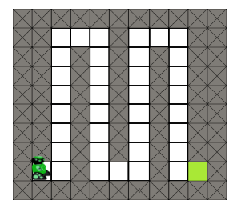
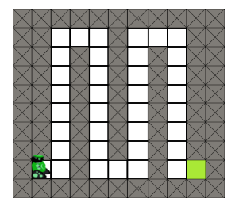
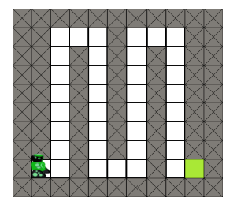
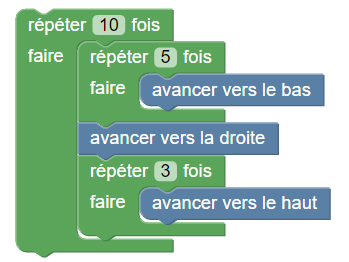
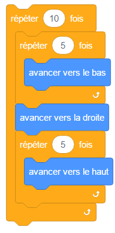

Parcours en lacets


 

Programmer le robot pour qu'il atteigne la zone verte tout au bout du parcours.
Vous aurez besoin de placer
un bloc « répéter » à l'intérieur d'un autre,
une boucle for à l'intérieur d'une autre,
comme dans l'exemple ci-dessous.


for loop in range(10):
for loop in range(5):
bas()
droite()
for loop in range(3):
haut()
Indication : pour aller du bas en haut d'une colonne, le robot doit avancer 10 fois vers le haut.